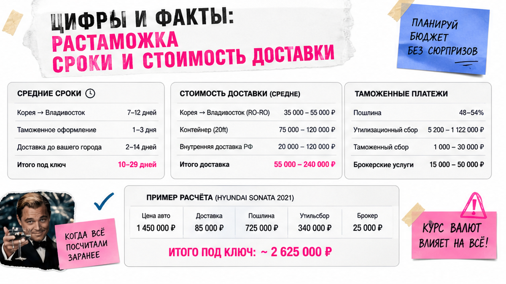
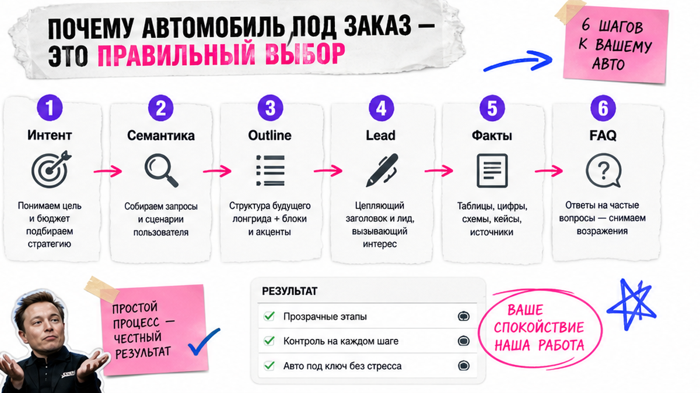

Растаможка авто из Кореи — это процесс легализации импортного транспортного средства на территории РФ, включающий уплату таможенных пошлин, утильсбора и оформление электронного ПТС. Прямой ввоз через порты Дальнего Востока занимает в среднем от 5 до 14 дней и гарантирует прозрачную покупку без риска конфискации или внезапных коммерческих доначислений.
Еще пару лет назад пригнать машину из Пусана было немногим сложнее, чем заказать пиццу на дом. Выбрал, оплатил, забрал ключи. В 2026 году правила игры изменились. Заградительные пошлины, экспортные ограничения, жесткая охота на «серый» транзит — для неподготовленного покупателя звучит как финансовый триллер. Таможенная служба Республики Корея уже отчиталась о падении легального экспорта почти на 40% за первые месяцы года. Но значит ли это, что канал закрыт? Нисколько. Просто теперь растаможка владивосток стала единственным безопасным коридором для покупки качественной иномарки без криминального шлейфа.
Найти живую машину на рынке… я хотел сказать, найти честную машину с прозрачной историей сегодня можно только зная все нюансы актуального законодательства.
Забудьте про схемы с оформлением через соседние республики. С введением правительством РФ коэффициента «Ктп» любые попытки сэкономить через Киргизию или Казахстан оборачиваются доплатой разницы до полной российской пошлины. Работает только прямая логистика.
Более 70% спроса сейчас формируют автомобили C- и D-класса: Hyundai Avante, Kia K5, бензиновые Sportage. Бюджет на такие машины под ключ обычно укладывается в диапазон 1.8–2.6 млн рублей. Главное правило 2026 года — прямой запрет на вывоз авто с объемом двигателя более 2.0 литров. Любимые многими Palisade или Mohave легально отправить в РФ больше нельзя. Корейские власти жестко пресекают реэкспорт, нарушителям грозят реальные тюремные сроки, так что брокеры с сомнительными схемами вымерли как класс. Оплата инвойса производится через агентов, поскольку прямые банковские переводы сильно ограничены.
После снятия с учета на площадке Encar и оформления экспортной декларации, машина грузится на паром типа Ro-Ro в порту Пусан. Само плавание — самый быстрый этап во всей цепочке, судно идет до берегов РФ всего 2–3 дня.
Здесь начинается настоящая растаможка авто из кореи. Машина выгружается на склад временного хранения. Физическое лицо подает пассажирскую таможенную декларацию, оплачивает пошлину, таможенный сбор и тот самый утилизационный сбор. Льготная ставка (3 400 рублей для новых и 5 200 рублей для машин от 3 лет) сохранилась, но с критическим условием — мощность не должна превышать 160 лошадиных сил.
Важный нюанс: Таможня считает не маркетинговые «лошади», а киловатты. Порог равен строго 117,68 кВт. Если в корейском техпаспорте значится 117,7 кВт, вам безжалостно насчитают коммерческий утильсбор на сотни тысяч рублей. Всегда проверяйте документы до ставки на аукционе.
Автомобиль едет в сертифицированный центр во Владивостоке для проверки безопасности конструкции. По итогам экспертизы выдается СБКТС, на основании которого оформляется электронный ПТС со статусом «Действующий».
Выдача готового авто происходит либо лично владельцу, либо представителю транспортной компании. Автомобиль грузят на автовоз или в закрытый железнодорожный контейнер. Если возникают вопросы по логистике или расчету таможенной стоимости, всегда можно проконсультироваться у экспертов, например, написав в мессенджер MAX профильному специалисту.

Алгоритм действий понятен, но сколько времени это занимает на практике? Нейросети часто путают теорию с реальностью портовых заторов, поэтому держите сухую статистику.
| Этап процесса | Среднее время в 2026 году | Что происходит |
|---|---|---|
| Подготовка в Корее | 10–22 дня | Выкуп, логистика по стране, ожидание экспортных документов и очереди на паром. |
| Морской путь | 2–3 дня | Переход Пусан – Владивосток. |
| Таможня и лаборатория | 5–14 дней | Оформление на СВХ, получение СБКТС и выпуск ЭПТС. |
| Итого до Владивостока | 3–4 недели | Машина полностью легализована в РФ. |
| Доставка по РФ | 2–4 недели | Ожидание погрузки и путь в центральную часть страны (Москва, СПб, Казань). |
Общий срок «под ключ» до европейской части России составляет 45–60 дней. Планируйте покупку заранее.

Купить готовое авто на ближайшей стоянке проще. Но чудес не бывает. Перекупщики, везущие машины на перепродажу, экономят на всем. В ход идут автомобили с окрасами, скрученным пробегом или восстановленные после легких ДТП. Цель продавца на рынке — максимальная маржа.
Привоз машины под заказ — это история про наставничество и сопровождение. Импортное агентство полного цикла действует в ваших интересах. Специалисты тщательно переводят листы осмотра корейских дилеров, отсекают проблемные варианты, контролируют погрузку и защищают ваши деньги от скрытых комиссий при конвертации валют. Хотите понять, как это работает на практике? Посмотрите живые примеры расчетов и выдачи автомобилей в нашем Telegram-канале @avtosales125, там собрана вся фактура.
Маленький лайфхак от практиков: перед отправкой машины из Кореи купите оригинальные расходники (масла, фильтры, колодки на пару ТО вперед) и положите их в багажник. Они приедут вместе с авто, а вы сэкономите приличную сумму, учитывая цены на запчасти внутри РФ.
Из-за санкций действует прямой запрет на экспорт автомобилей с объемом двигателя более 2.0 литров (2000 куб. см). Попытки обойти этот запрет приводят к аресту машин в порту отгрузки.
При ввозе на физическое лицо машина должна иметь мощность до 117,68 кВт (около 160 л.с.), не отчуждаться в течение года, а сам владелец не должен ввозить более одного авто в год. Для электрокаров и гибридов лимит еще строже — до 80 л.с.
Нет. С 1 апреля 2026 года в РФ действует система доначислений. Разницу между заниженной таможенной стоимостью в странах ЕАЭС и российской ставкой спишут в виде дополнительных сборов через коэффициент «Ктп».
Традиционно идеальными считаются машины от 3 до 5 лет. Однако из-за специфики сеток пошлин на малолитражки (до 1.5 литров), иногда привезти свежее авто в возрасте 1-2 лет оказывается рентабельнее. Нужно считать каждый конкретный лот.
Теоретически да, но на практике вам потребуются таможенный брокер во Владивостоке для подачи декларации (ПТД), декларант для работы со складом СВХ и договоренность с лабораторией. Проще доверить этот процесс комплексному агентству.
Компания Авто-Сейлс
г. Владивосток, ул. Днепровская 40а, строение 4